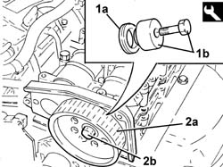

1036L32 front oil seal intake camshaft in cylinder head extension replace with timing belt removed
- Path
- Procedures > 10 ENGINE > 1036 TIMING SYSTEM > 1036L camshaft (2) in top head (1) > 1036L32 front oil seal intake camshaft in cylinder head extension replace with timing belt removed
- Kind
- repair procedure (removal / refitting; the operation number is the code)
- Applies to
- engines: 2.4 JTD 20v; all production periods
- Interactive page
- https://sloeber94.github.io/elrnDB-a156/en/#/3237880
Applies to: engines: 2.4 JTD 20v; all production periods
 Removing
Removing
 Refitting
RefittingUndo the bolt and remove the driven pulley
Release and remove the camshaft oil seal in the upper cylinder head.
Applies to: engines: 2.4 JTD 20v; all production periods
Refitting
Removing1. Place a new camshaft oil seat in its seating in the upper cylinder head (1a) using the tool (1b).
 | Name | Country |
|---|---|---|
1b | Fitting tool | 1.870.896.800 |
2. Refit the driven pulley (2a) in its seating and fixi it with the bolt (2a) without tightening it.
